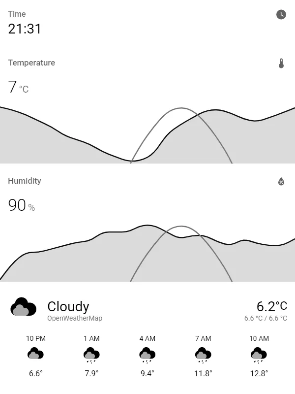

HA Lovelace Kindle Screensaver
由服务端渲染 Home Assistant 页面，旧 Kindle 只负责显示。
- 信息屏
能运行截图显示脚本的 jailbroken Kindle
需另有 Home Assistant 与截图服务，屏幕不是在运行完整浏览器应用。

这是一条 具体改造路线 · 最近核对公开资料 2026-10-20
从闲置到能用，它改变了什么
原来卡在哪里
闲置 Kindle 屏幕适合低频信息，但不能直接按现代平板方式展示所有网页。
改完能做什么
由服务端生成 Home Assistant 仪表板图像，再由 Kindle 更新显示。
项目作者以 Kindle 4 为实例。渲染发生在外部服务，设备主要承担显示任务，因此应分别排查 Home Assistant 页面权限、截图生成和设备拉取。刷新频率越高，不一定越实用：墨水屏延迟、残影与耗电必须在自己的设备上测量。它适合状态看板，不适合视频或高频交互。
适合你，如果
已有 Home Assistant，希望把少量状态长期放在墙面或桌面的使用者。
先别选，如果
要求实时动画、复杂触控控制或无需任何服务端的使用者。
做完以后这样检查
- 先生成一张正确尺寸的截图，再检查设备显示
- 测试认证失效与网络中断，避免静默展示过期信息
- 测量刷新间隔与实际耗电，显示数据更新时间
这是给你的验收清单；KitAgain 目前还没有亲手完成这些硬件测试。
你要准备什么
- 怎么改
- 安装脚本
- 上手难度
- 进阶
- 拆机
- 不需要
- 焊接
- 不需要
- 云 API / 服务
- 可使用本地服务
- 成本金额
- 待核价 / UNKNOWN
还可能要花的钱
- Home Assistant 与截图服务器
这些价格还没有核实。软件开源，也可能仍要买转接件、主板、存储，或承担电费和服务费。
最坏会怎样，怎么退回来
数据丢失风险: 可能发生; 刷坏或无法启动的风险: 依操作路径. 这是按操作路线给出的提醒，还没有在每台设备上实测。
删除定时下载/显示脚本，撤销 HA 访问令牌；原阅读用途保留情况依赖安装方式。
先收藏恢复资料（无已核验链接）
这条信息现在可信到哪一步
E1 · 源码与部署文档
README 提供 HA 截图服务、online screensaver 和作者 Kindle 4 设置入口。
KitAgain 目前没有亲手测试这台设备，也没有把别人的成功截图当成我们的复现。
- 维护状态
- 仓库未归档
- GitHub 最后 push
- 2026-10-04T19:40:53Z
- 仓库许可证
- MIT
未归档或近期 push 不能证明型号无故障；镜像迁移也不等于停止维护。
根许可证或 README 声明不代表固件、模型、品牌和第三方组件均采用相同许可。
项目账号与已核实作者主页
- sibbl · GitHub ↗ — 源码仓库所有者账号；不据此推断其为唯一作者
仓库所有者账号用于追溯项目来源；作者社交账号只有在项目资料、仓库或作者主页能确认归属时才收录。
这些链接分别能帮你做什么
- 上游项目文档 ↗2026-10-20
先用它了解项目能做什么、怎样开始，以及作者写明的限制。
https://github.com/sibbl/hass-lovelace-kindle-screensaver/blob/main/README.md
原始页面可能使用中文或英文。准备动手时，再按你的准确型号、固件和地区版本核对一次。